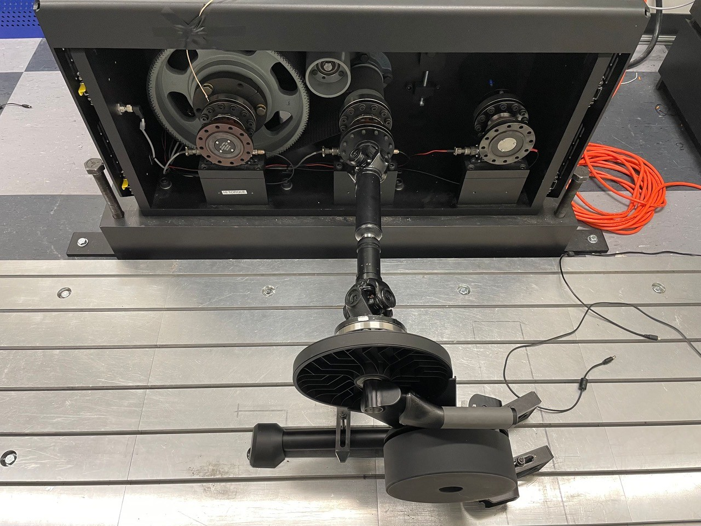
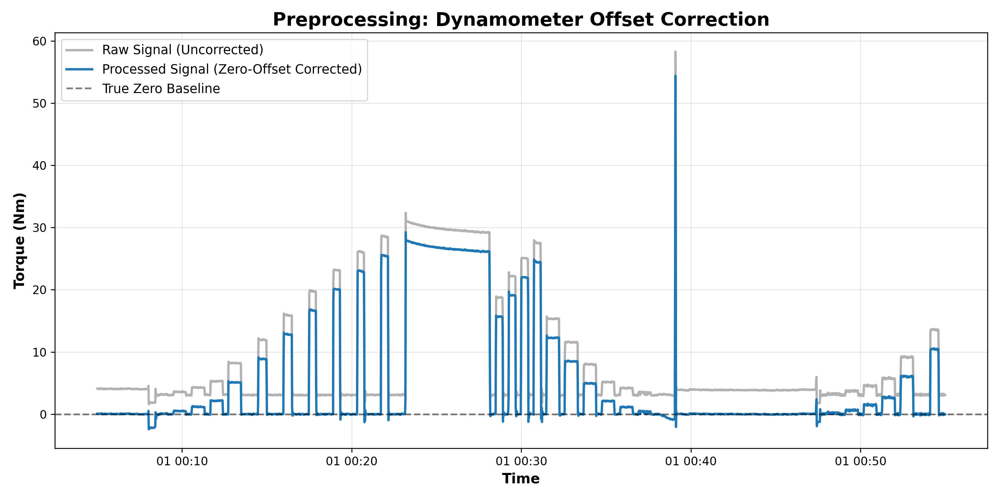
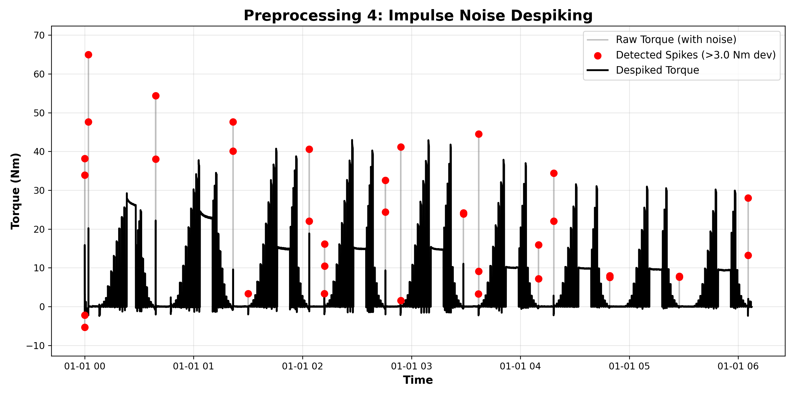
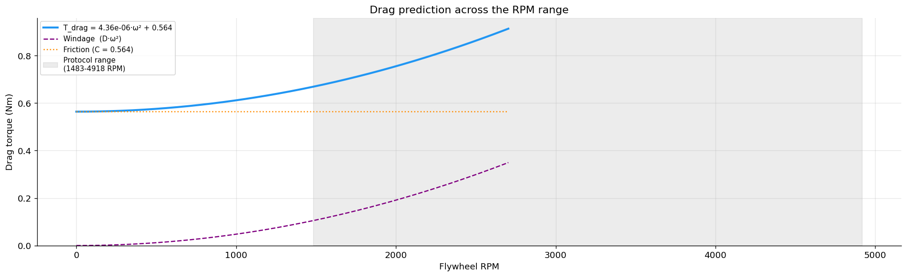
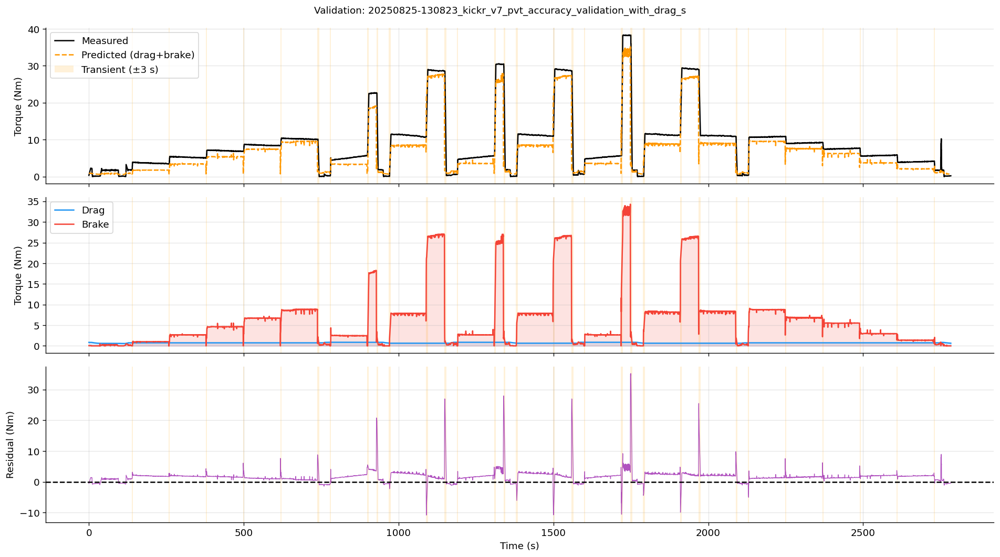
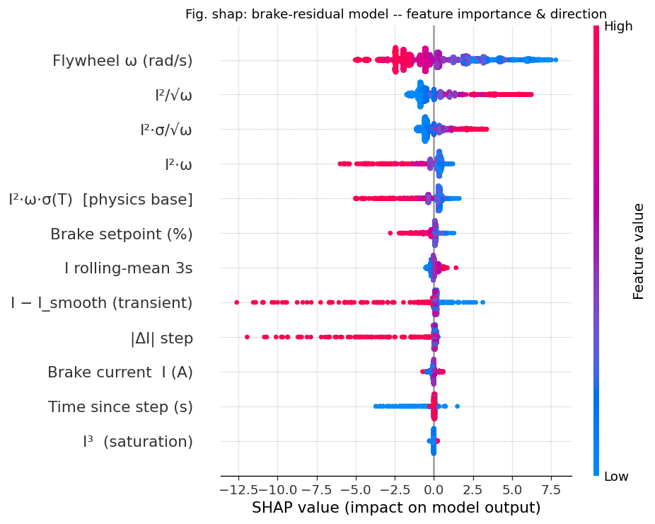
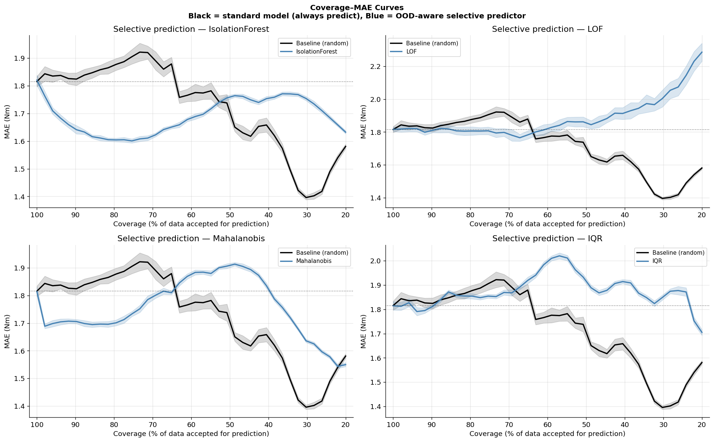
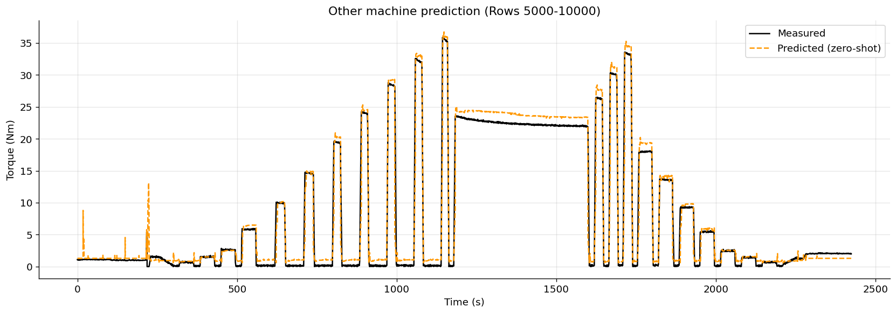

The problem
A smart indoor trainer replaces the rear wheel of a bicycle and generates resistance electromagnetically. The number it reports to Zwift and the rest of the cycling e-sports world is power, and power is cadence times torque. Cadence is cheap and reliable to measure. Torque is the hard one: you either fit a strain gauge, which is accurate and expensive, or you infer it from the internal state of the brake, which is what the CORE2 does.
The CORE2's inference is a static lookup table mapping kinematic and electrical states — flywheel speed, brake current — to torque values. It works. Its cost is that the table is produced by a long factory calibration campaign, and it is static: a minor mechanical revision means rebuilding the whole thing. On top of that, mass production introduces unit-to-unit variation, so one table applied to every machine gives biased readings on some of them.
The physics is not clean either. Components heat up during a ride, their electrical resistance shifts, and the magnetic behaviour of the brake changes with temperature. A purely physical white-box model handles the kinematics well and breaks down on those non-linearities. A purely data-driven black-box model fits the non-linearities and occasionally returns physically impossible values, such as negative drag.
The question the thesis asks: can you build an architecture that sits between those two extremes and produces a virtual sensor that is both accurate and reliable?

Getting the data to a state where physics applies
The inertial term in the torque balance is T = I·α, and α is an angular
acceleration obtained by differentiating a low-rate speed signal. Differentiation amplifies
noise, so anything wrong with the raw streams gets worse before it gets used. Four things were
wrong with them, and each needed its own step.
The dynamometer's torque channel has an offset that drifts. The drift is estimated during isolated spindown events, where the true torque is known to be near zero, and interpolated linearly between them. Getting the estimate right at each spindown took some care: the single minimum reading is too sensitive to one undershooting sample, and a median tracks the noise floor, so the estimate takes the maximum of the three lowest readings at the end of the segment.

The internal sensors trail the dynamometer. When the rig changes load or speed, the trainer's own telemetry registers it a few samples later. Both speed signals are mean-centred and cross-correlated, and every internal column is shifted by the lag that maximises the correlation. On the validation recording the lag was 8 samples, and the correlation between the two speed signals went from 0.981 to 0.994. The lag is session dependent, so it is recomputed per recording rather than fixed once.
Speed steps produce transients the sensor cannot resolve. After a sudden speed change the torque trace goes briefly erratic. The dynamics themselves are understood; the recordings simply undersample them, so what is left is an aliased trace with no signal in it. Any sample-to-sample jump above 5 Nm flags the following 3 seconds for removal. A rider on a deployed trainer does not produce step changes of that character anyway.
Spikes survive all of that. A rolling median filter flags points more than 2.5 Nm away from the local median and replaces them. Measured over a steady-state hold, the standard deviation of the torque signal drops from 0.134 to 0.039 — which is roughly the difference between sensor noise and the underlying physical resistance.

Applied in sequence, the pipeline takes the final model from R² = 0.613 on raw data to R² = 0.907, with the offset correction responsible for most of that. I also tried RANSAC to throw out outliers in the coasting data before fitting the drag model. It made things noticeably worse — R² fell from 0.93 to 0.79 — because there are only about 8,000 coasting rows to begin with and filtering them further removes the relationships the fit depends on.
The architecture
The total torque splits into two physically distinct things: passive mechanical losses that exist whenever the flywheel turns, and the electromagnetic braking torque that the machine applies on purpose. So the model splits the same way.
T_total = T_drag + T_brake
└─ NNLS ─┘ └─ physics + XGBoost residual ─┘
D·ω² + C k·i²·ω·σ(T) + learned correctionThe drag half is a non-negative least squares fit of two coefficients: a windage term proportional to ω² and a Coulomb friction constant. NNLS rather than an unconstrained fit because a negative drag coefficient is not a thing, and an unconstrained learner will happily produce one. The fitted values were D = 4.36 × 10⁻⁶ Nm·s²/rad² and C = 0.564 Nm. Both land in a physically plausible range: rotating-disk aerodynamics gives a free-disk lower bound about 50× below the fitted windage, which is the sort of amplification an enclosed disk geometry produces, and bearing friction plus belt tension predict a Coulomb term around 0.55 Nm.

The braking half starts from a single-term eddy-current expression and gives XGBoost the
residual to learn. That ordering matters: the learner never predicts torque directly, only the
part the physics failed to explain, so its output is bounded by how wrong the physics was.
Hyperparameters came from a 25-iteration randomised search with 3-fold cross-validation. There
is no early stopping — the full estimator budget is spent and overfitting is held back with
min_child_weight, reg_lambda and gamma instead.
Does the hybrid actually beat either half?
Evaluated on the braking residual over the steady-state braking subset:
MAE follows the same order: 4.82, 4.63, 2.63 and 1.84 Nm. The wider comparison, run on the full steady-state validation set of 8,996 rows with the same NNLS drag baseline under all of them, is the more informative table:
| Braking residual model | R² | MAE (Nm) | RMSE (Nm) | Bias (Nm) |
|---|---|---|---|---|
| Mean predictor | −0.89 | 7.08 | 10.02 | +6.89 |
| Single-term NNLS | 0.472 | 4.06 | 5.28 | +3.97 |
| Multi-term NNLS (4 physical features) | 0.866 | 2.16 | 2.66 | +1.88 |
| Random Forest | 0.910 | 1.96 | 2.18 | +1.80 |
| Gradient boosting machine | 0.883 | 2.08 | 2.49 | +1.76 |
| XGBoost residual (proposed) | 0.934 | 1.68 | 1.87 | +1.56 |
| End-to-end XGBoost, no decomposition | 0.888 | 2.26 | 2.44 | +2.18 |
| Trainer's own FTMS output (the production LUT) | 0.972 | 1.06 | 1.21 | −1.05 |
Two rows are worth pausing on. The multi-term NNLS beating the single-term one by a wide margin says the extra physical features carry real content rather than decoration. And an XGBoost trained end-to-end on total torque, with access to exactly the same raw features, does worse than the decomposed version — the explicit split into drag and brake helps the learner more than it would have managed to find on its own.

Has it learned physics, or memorised a dataset?
This matters more than the accuracy number, because a model that has memorised the training grid will not transfer to another unit. Gain and SHAP both say the same thing, and they say something a physicist would recognise.
Flywheel speed ω is the most informative feature: in a hysteresis brake, faster rotation
raises the rate of flux change across the magnetic circuit, so the induced currents and the
resulting torque go up with it. Second is i²/√ω. The i² factor is the coil
current entering through the flux, which scales linearly with current, and the force, which
scales with B². The 1/√ω factor is the skin effect: at higher speed the induced currents crowd
towards the surface of the iron flywheel, so the effective conductor cross-section — and the
torque's dependence on speed — falls.

Knowing when to keep quiet
The residual model is still bounded by its training envelope. On a thermal state it never
saw, it can extrapolate badly and hand back a physically impossible number, with no signal that
anything went wrong. So the system needs a reject option: when an input looks out of
distribution, the XGBoost stage is bypassed and the prediction falls back to the physics-only
drag estimate D·ω² + C, which has two learned parameters and is interpretable
whatever the input.
Four unsupervised detectors were fitted on the same training features and compared by coverage–MAE curve against a random-rejection baseline averaged over 200 trials. Integrated gain over the coverage range, in Nm:
| Detector | Integrated gain (Nm) |
|---|---|
| Local Outlier Factor | +0.123 |
| Interquartile range | +0.120 |
| Mahalanobis distance | +0.026 |
| Isolation Forest | −0.029 |

Isolation Forest doing worse than random is the interesting result, and it is not a bug. The detector isolates points by rarity in feature space, but the dynamometer protocols sweep the operating envelope deliberately, so the rare combinations — plateau corners, brief transitions between speed steps — are physically valid states the model has already learned. It rejects the samples the model handles well and keeps the hard ones.
LOF and IQR land within 0.003 Nm of each other by completely different mechanisms. My recommendation for deployment is IQR anyway: on a device this small, the tiny loss in integrated gain is repaid many times over in memory, latency and the ability to explain what the detector did.
Does it transfer to another machine?
Everything above is fitted on one unit, 717B. The whole point of learning physical parameters rather than a table is that they should mean something on a different machine. The trained model was applied to a second unit, 335C, with no retraining at all.

The finding is in the shape of the error rather than its size. A single additive constant closes most of the gap, which means the functional form of the torque curve transferred between units and only the offset did not. That is consistent with a mechanical friction difference or a slightly different magnetic air gap, and it sketches what a minimal end-of-line calibration would have to do: fit one number, not a table. The caveat is that the bias was fitted on the full 335C timeline rather than a held-out split, so treat the corrected figure as an upper bound on what one parameter can buy.
Two things that did not work
Estimating the moment of inertia from the data. I is currently
a constant supplied by the manufacturer, and production tolerances mean the true value varies
between units. Isolating segments where the brake is off and acceleration is positive turns
I = (T_total − T_mech)/α into a regression. It did not help. The estimate is
erratic because α comes from differentiating a low-rate signal and the calculation then divides
by it. On the coasting window where the inertial term dominates, the estimated and the supplied
inertia give R² = 0.8718 and 0.8717 — the noise in α drowns out whatever correction was there.
Smoothing the output. A causal rolling median removes jitter, and costs more than it saves: at a window of 7 samples MAE rises from 1.68 to 1.77 Nm and R² falls from 0.934 to 0.886, because the filter introduces about three samples of lag. Every window size tested traded the same way.
What did work post-hoc was the boring option. A constant bias correction of +1.42 Nm cuts MAE from 1.68 to 0.877 Nm and lifts R² to 0.962, and the fraction of predictions landing within 5% of ground truth goes from 4% to 49%. A physics-grounded version of the same correction — modelling the residual as friction across an extra interface between the brake hub and the dynamometer output shaft, with separate driven and coasting coefficients — was fitted on training data alone and still reached R² = 0.916 without touching the validation set.
Where it ends up
Against the production lookup table, the hybrid model has a lower MAE, a marginally lower R² and a higher RMSE. The LUT still wins on the tails of the error distribution, and I would not claim otherwise. What the hybrid gives that the LUT cannot is a clean separation into drag and brake components, which is what made the physically grounded features useful and the cross-unit transfer possible at all, and a reject option that catches implausible predictions on inputs the model has not seen.
On the numbers. All metrics are single-run point estimates rather than averages over seeds. XGBoost's tree-construction stochasticity carries an implicit variability of roughly ±0.005–0.01 in R², which is comparable to some of the gaps between candidate models in the table above.